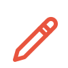

De avond
We schuiven aan één grote tafel en gaan los: tekenen, schetsen, schilderen of gewoon wat krabbelen. Geen niveau nodig, wel zin om iets te maken.
Wanneer
Woensdag 19 augustus.
Van 19:30 tot 22:00.
Van 19:30 tot 22:00.
—
tekenavond

Meenemen
je eigen tekengerei. Potlood lenen kan altijd.
Ideeën om te tekenen zijn er genoeg.